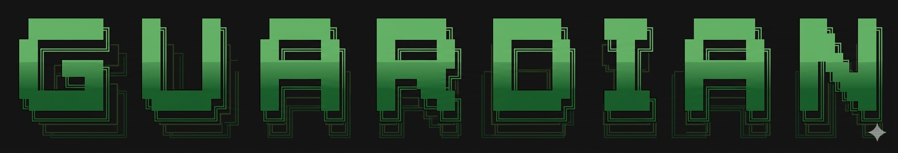

Allowlist or blocklist
Run blacklist to kill named apps, or whitelist to kill everything you didn't approve. System processes are always spared.

// Process control for Windows fleets
Guardian blocks or whitelists applications on every Windows machine you run — managed from one Android app and a single lightweight server. Set a policy once; agents enforce it everywhere, every second.
Live preview · agents kill blocked processes in <1s
// Capabilities
Run blacklist to kill named apps, or whitelist to kill everything you didn't approve. System processes are always spared.
The Guardian Android app is your console: add blocked apps, lock machines, and switch modes from anywhere — no desktop login required.
Agents scan running processes every second and terminate anything that isn't allowed — before a user gets far with it.
Send one command to force-close apps and shut down every connected machine at once — useful at closing time or in an incident.
Register each computer, see when it was last online, and block or release machines one by one — or all of them together.
A single Go binary with embedded SQLite — no CGO, no database server. Run it directly, as a systemd service, or in Docker.
// Topology
You set policy in the app. The server stores it. Agents sync and enforce. Each link is authenticated with its own bearer token.
Android control panel for blocked apps, modes, computers and power.
REST API holds apps, modes and registrations, with in-memory caches in front.
Polls for the latest policy and terminates processes that break it.
// Enforcement modes
Only processes on the block list are killed. Everything else runs freely. Good for banning specific apps.
Everything not on the allow list is killed — system processes excluded. Lockdown for kiosks and classrooms.
Nothing is killed. Returned automatically when the server is disabled or a machine is unblocked.
// Deploy
Pre-built binaries ship in the dist/ directory. Copy, configure, go.
Set your TOKEN and ADMIN_TOKEN, then start it.
cp server.env .env
docker compose up -dRun the installer on each PC and give it an identity number.
Install-Guardian.bat
> IDENTITY: 04Install the APK, add your server address and admin token, start enforcing.
guardian.apk
Settings → server + tokenGrab the binaries, wire up three components, and you're enforcing policy across every machine.